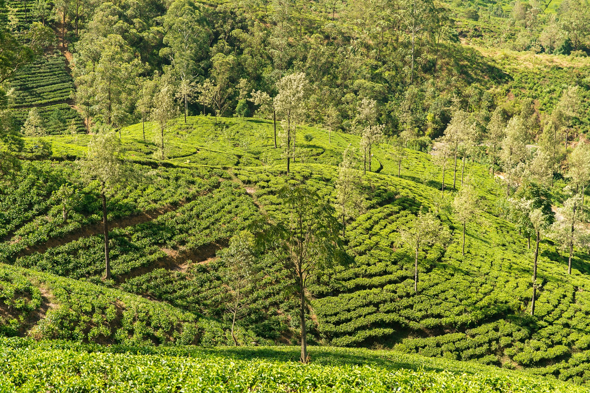

ROOTED IN SRI LANKA. REACHING FOR TOMORROW.Good things
YOUR NEXT CHAPTERTea field trainee ↗Applications are openGood things
grow from
great beginnings.
From our tea estates to our greenhouses, we’re growing a future shaped by the land — and the people who care for it.
A love for the land✳A future in tea✳People at the heart✳Grown with purpose
EXPLORE THE WORLD OF FARMAXThere’s more
There’s more
to discover.
The leaf. The land. Your next chapter.
01 / DISCOVER TEAA small leaf.
Closer to
Make room
A small leaf.
An extraordinary story.
Understand the plant, the craft, and the journey from field to cup.
Explore tea ↗02 / OUR ESTATESCloser to
our roots.
Discover the land and people at the heart of Farmax.
Meet our estates ↗03 / CAREERSMake room
for your future.
We’re welcoming tea field trainees. Your next chapter could start here.
Explore careers ↗Connected by the land.
Inspired by what comes next.
Tea estates and greenhouse agriculture. People and possibility. Discover the different sides of Farmax Agri Business.
Get to know us ↗Let’s grow something good.↗